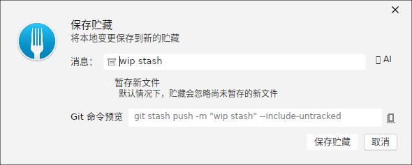
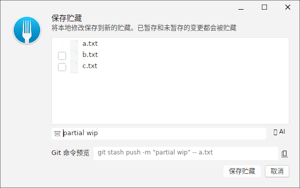
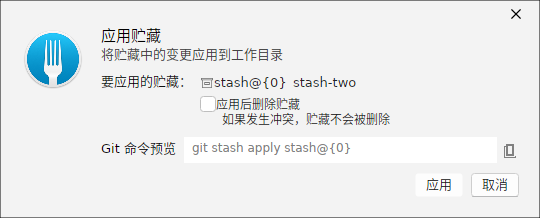
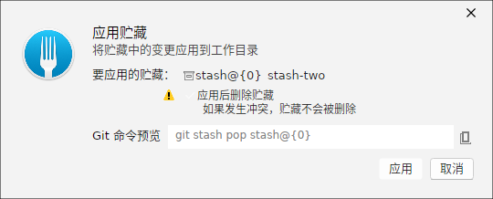
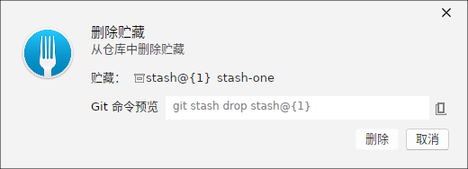
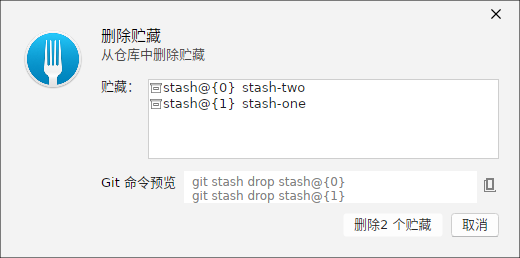
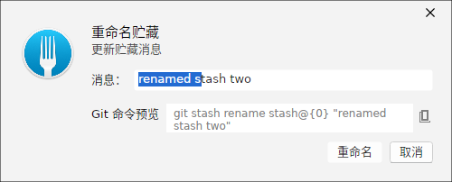

保存 Stash
「保存 Stash」对话框把当前未提交的改动（工作区 + 可选的新文件）暂存起来，清空工作区以便切换分支。输入描述消息、决定是否暂存未跟踪的新文件后，命令预览会给出对应的 git stash 命令。

部分保存
当只需要把部分文件的改动存入 Stash 时，使用「部分暂存」：在文件列表中只勾选要暂存的条目，其余改动留在工作区。

应用 Stash（保留条目）
「应用 Stash」对话框把选中的 stash 改动重新应用到工作区。默认的 Apply 模式在应用后保留该 stash 条目，方便之后再次应用。

应用并删除（Pop）
勾选「应用后删除该条目」，则应用成功后会自动删除对应的 stash（等价于 git stash pop 的语义），避免条目堆积。

删除 Stash
「删除 Stash」对话框列出当前的全部 stash 条目。可删除单个条目，也可多选批量删除，命令为 git stash drop。


重命名 Stash
「重命名 Stash」对话框为已有的 stash 条目重新命名（其描述消息），便于长期保存后仍能辨识内容。输入新名称后会预览对应的重命名命令。

说明：Stash 面板按
stash@{n} 编号排序，编号越小越新。若应用时发生冲突，可参考「合并冲突解决」章节处理。